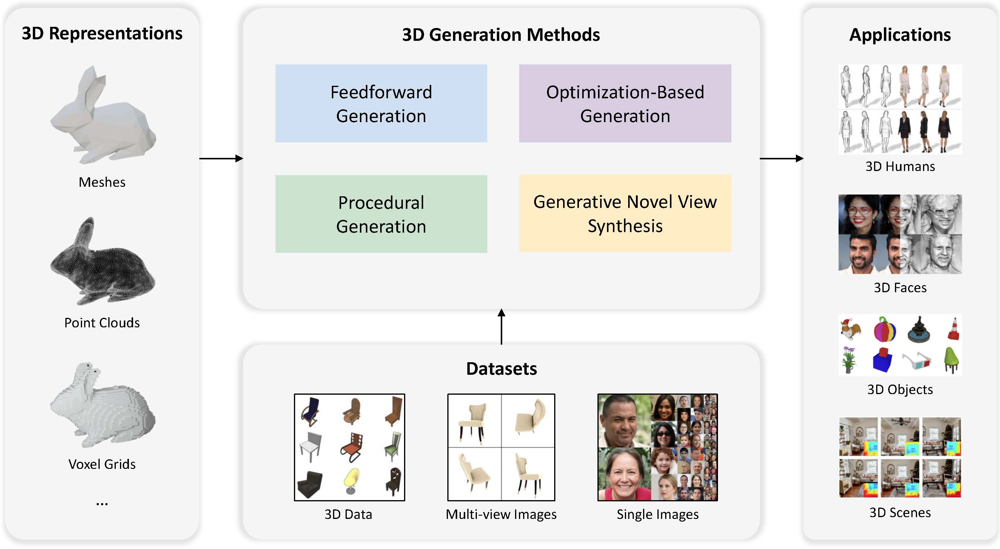

|
Xiaoyu Li Researcher, Tencent AI Lab
|
|
|
My name is Xiaoyu Li. I am currently a researcher at Tencent AI Lab. I received my Ph.D. degree with the Department of Electronic and Computer Engineering at the Hong Kong University of Science and Technology (HKUST) in 2021, supervised by Prof. Pedro V. Sander. Prior to that, I received a Bachelor of Engineering at Huazhong University of Science and Technology (HUST) in 2017. I joined the Tencent AI Lab in September 2021. |
|


-

Doctor of Philosophy (Ph.D.) in Department of Electronic and Computer Engineering
The Hong Kong University of Science and Technology
2017 - 2021
-
Bachelor of Engineering (B.E.) in Electronic Information Engineering
Huazhong University of Science and Technology
2013 - 2017
-

Advances in 3D Generation: A Survey.
Xiaoyu Li, Qi Zhang, Di Kang, Weihao Cheng, Yiming Gao, Jingbo Zhang, Zhihao Liang, Jing Liao, Yan-Pei Cao, Ying Shan.
-
Full Postgraduate Studentship, 2017-2021
-
Outstanding Undergraduate, 2017
Rank 1st in the National Experimental Class "SeedClass"
-
Excellent Bachelor Thesis, 2017
-
National Scholarship, 2016
-
Merit Student, 2016
-
National Scholarship, 2015
-
Merit Student, 2015
-
Third Prize in Chinese Mathematics Competitions, 2014